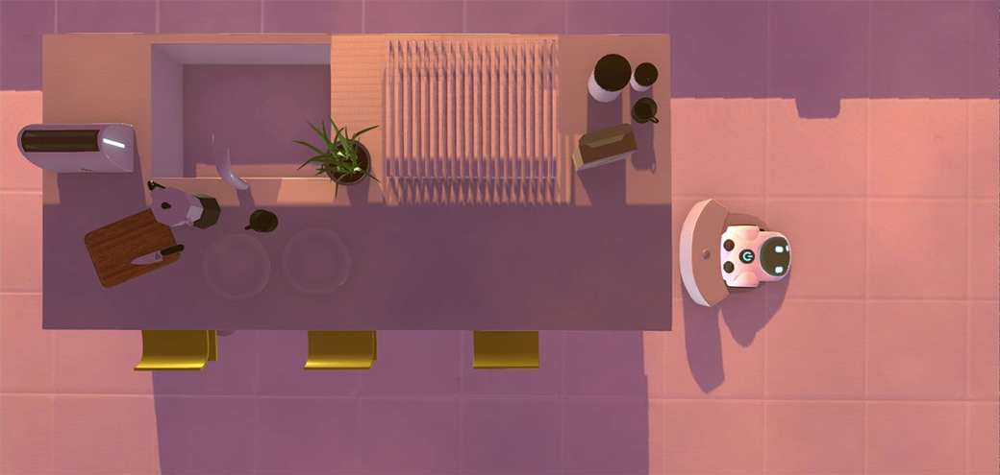

Retrospectiva săptămânii 18-24 noiembrie 2018
Retrospectiva săptămânii este rubrica duminicală în care trecem în revistă evenimentele săptămânii de pe frontul de gaming: știri şi articole (scrise de alții, bineînțeles, că e mai ușor aşa), industrie, lansări, oferte de jocuri, toate numai de savurat la cafeaua de duminică dimineața. (Și la care oricine poate contribui. 1)
Știri
- Skybound au început să lucreze la sezonul final din The Walking Dead. (Eurogamer, Games Informer, The Verge)
- Valve nu va mai produce Steam Link după ce stocurile actuale se vor epuiza. (Eurogamer, Games Informer, The Verge, Ars Technica)
- 20th Century Fox a înregistrat marca Alien: Blackout pentru jocuri video. (Gematsu)
- Valve a lansat versiunea beta pentru Artifact, dar s-a lovit de criticile negative ale jucătorilor care reclamă o monetizare agresivă și costuri ascunse. (PCGamesN, Variety, PC Gamer)
- Ubisoft revine asupra deciziei de a cenzura imaginile „18+” din Rainbow Six Siege după ce s-a lovit de reacțiile fanilor. (Eurogamer, PCGamesN, PCGamesInsider.biz, GameDaily.biz)
- Fortnite apare iar în știri din pricina mișcărilor de dans pe care le folosește fără a-i compensa pe artiștii care le-au creat. (RPS, Eurogamer, GamesIndustry.biz, VG247)
Articole (critică, dev, design)
- It Starts with a Flicker: How Games Can Bring Humanity Closer Together (Variety)
- Death of Dreams: What Happens When Game Studios Shut Down (Variety)
- Red Dead Redemption 2 Is True Art (New York Times)
- Abstract Art (Unwinnable)
- The Ethics of the RPG Re-Roll (Kotaku)
Actualitate
- No-one wins in the Black Friday race to the bottom (PCGamesInsider.biz)
- On Ubisoft’s pandering to unreasonable players (GamesIndustry.biz)
- No, Ubisoft Didn’t ‘Pander’ To Entitled Gamers Over ‘Rainbow Six Siege’ Censorship (Forbes)
- When does an homage become a rip-off? (GamesIndustry.biz)
- Fortnite Creator Facing Potential Lawsuit Over ‘Stolen’ Dance Moves - A Legal Analysis (Gamasutra)
- Artifact’s Monetisation Is A Mess (Timber Owls)
Not-a-review
- With Gran Turismo, racing esports has come of age (Eurogamer)
- Tetris Effect is perfect for people overwhelmed by modern video games (The Verge)
- Red Dead Redemption 2 is a confection of cowboy clichés (Polygon)
- (Spoilers) Red Dead Redemption II's Slow Burn Is Why It's Great (Games Informer)
- Due Diligence: A Boilermaker and His Helper (Haywire Magazine)
- How Players Used Shotguns to Tear Open the Fabric of Reality in 'Spelunky' (Waypoint)
- It’s Great When A Series Of Assassin’s Creed Side Activities Comes Together Just Right (Kotaku)
- Hitman’s humour evolved because of 47’s penchant for disguises (RPS)
- (Spoilers) The Beautiful Highs and Occasional Lows of Spider-Man on PS4 (USgamer)
- A Battlefield for Everyone, But Rarely at the Same Time (Waypoint)
Industrie
- The Past, Present, And Future Of Diablo (Kotaku), (TL;DR pe USgamer, GamesIndustry.biz)
- Is Hi-Rez living in Blizzard’s shadow? (RPS)
- Having a Vision with thatgamecompany Eric Koch (Game Dev Unchained)
Istorie, retrospectivă
Half-Life 2 a împlinit 20 de ani:
- 20 years on, Half-Life’s opening tram ride is still an audacious bit of theatre (Eurogamer)
- Half-Life is 20: why everything you liked about Valve’s classic was a secret train (PC Gamer)
- Whatever happened to Half-Life 3? The complete saga so far (PCGamesN)
- Half-Life turns 20 today, and it feels more original than ever (The Verge)
- Half-Life is 20! Happy Birthday! We are all old! (RPS)
- Half-Life at 20: why it is the most important shooter ever made (The Guardian)
Și Legend of Zelda: Ocarina of Time împlinește 20 de ani:
Left 4 Dead face 10 ani:
Iar Xbox One doar 5 ani:
- Xbox One re-review, five years in (Polygon)
- Xbox One’s 5th Anniversary - A Bumpy Journey, A Bright Future (TechRaptor)
Plus:
- Thief: The Dark Project is 20 years old, and you should play it today (Eurogamer)
- The Strange History Of Grasshopper Manufacture (Games Informer)
- The Sad Sorry Tale of Mr. Card Game (Kotaku)
- (Video) Video: How an 11th-hour decision made Aliens versus Predator a classic (Ars Technica)
Dev, making of
- How multiplayer fell into Human: Fall Flat (RPS)
- Zen and the art of development: Designing games for meditation (GamesIndustry.biz)
- All the pretty horses: how Red Dead Redemption 2’s majestic steeds were made (The Guardian)
- We Happy Few, Early Access, and the danger of a good trailer (Gamasutra)
- Developing the unique multi-genre murder-mystery The Hex (Gamasutra)
- Interview with ADOM Creator Dr.Thomas Biskup (Gamasutra)
- Armchair VGUX: No Man’s Sky (Super Jump Magazine)
Design, world-building
- What you Give is What you Get: Environmental Storytelling in Games (Rempton Games)
- (Poze frumoase) The Art Of Shadow Of The Tomb Raider (Kotaku)
- (Poze frumoase) The Art Of Battlefield V (Kotaku)
Anunţuri şi lansări de jocuri
Anunţate
- Civilization VI: Gathering Storm, un nou expansion pentru Civ (Destructoid, Eurogamer)
- Warborn (RPS)
Acum cu dată de lansare
- Rapture Rejects, un joc battle royale inspirat de Cyanide and Happiness, se lansează în early access: 29 noiembrie (PC Gamer)
- Checkmate, ultimul episod din The Council, apare pe 4 decembrie (Gamereactor)
- Kenshi iese din early access după 12 ani de dezvoltare: 6 decembrie (PC Gamer)
- Forgotten Sanctum, al 3-lea DLC pentru Pillars of Eternity 2: Deadfire: 13 decembrie (Eurogamer)
- Miscreated, un joc survival online făcut în CryEngine: 18 decembrie (DSOGaming )
- Black Mesa: Xen se va lansa în al doilea trimestru din 2019 (Eurogamer, DSOGaming)
Lansate
- 20 noiembrie: Battlefield V (EA Store)
- 20 noiembrie: Element: Space, un tactical TBS (vezi RPS sau RPG Codex) s-a lansat în early access (Steam)
- 20 noiembrie: Farming Simulator 19 (Steam)
- 20 noiembrie: Marvel’s Spider-Man: Turf Wars (PlayStation Store)
- 20 noiembrie: Quiet as a Stone - vezi și RPS (Steam)
- 22 noiembrie: The Haunted Island, A Frog Detective Game - vezi și RPS (Steam)
Prăvălii de jocuri
Știri
- Three Total War Games Get "Definitive Editions", Free To Base Game Owners (TechRaptor)
- Dar și Total War: Arena is shutting down early next year (PC Gamer)
Jocuri noi în catalog
- Discord Nitro adds handful of Adult Swim Games (Shacknews)
Reduceri și promoții
Săptămâna asta sunt reduceri de Black Friday pe mai toate magazinele de jocuri: Steam, GOG, Humble, Origin, Uplay, Fanatical, Green Man Gaming, Chrono.gg, Battle.net, etc.
- Forget Black Friday, the Steam Autumn Sale is live now (Destructoid)
- Best deals of Steam Fall Sale 2018 (Shacknews)
- Humble Jumbo Bundle 12 Now Live - DiRT 4, Project Highrise And More (TechRaptor)
- Green Man Gaming Black Friday Deals - Up to 75% XCOM 2, Civilization VI, ARK: Survival Evolved, and More (USgamer)
- GOG’s Black Friday Sale is live even though it’s only Wednesday (PC Gamer)
- Blizzard’s Black Friday 2018 deals include big discounts on Overwatch, Diablo and more (Polygon)
- Weekend Console Download Deals: Black Friday 2018 sales for PlayStation, Xbox, and Nintendo (Shacknews)
- Weekend PC Download Deals: Steam Autumn Sale and other Black Friday 2018 deals (Shacknews)
- Nutaku Black Friday Sale Has F2P Events & Great Adult Game Deals (TechRaptor)
- The Best Black Friday 2018 PC Gaming Deals (TechRaptor)
- Star Citizen free trial week blasts off (RPS)
- Green Man Gaming Black Friday sale discounts Monster Hunter World, Assassin's Creed Odyssey, Far Cry 5 and more (VG247)
Recomandarea săptămânii: Rumu

Rumu se încadrează perfect într-o categorie de jocuri tot mai prezentă în ultimii ani, cea a așa numitelor comfort games. Este un joc lipsit de dificultate, cu o atmosferă fermecătoare, bun de jucat seara după o zi de lucru.
În el joci rolul lui Rumu, un aspirator dotat cu inteligență artificială. AI-ul central al casei unde „locuiești” îți coordonează sarcinile zilnice, iar pe măsură ce le îndeplinești vei descoperi indicii despre familia care locuiește aici. Puzzle-urile sunt foarte simple, dar povestea e suficient de captivantă - un amestec de Portal 2 cu Gone Home despre implicațiile morale ale AI și relațiile disfuncționale pe care le avem cu familiile noastre.
{kind=link}
{kind=link}
Rumu se poate lua de pe Steam cu 8,19€.
- Dacă ai citit vreun articol sau vreo știre interesantă, sau ai o recomandare de joc, și crezi că merită incluse în retrospectiva săptămânii, te așteptăm pe forum pe unul dintre topicurile dedicate: Știri, Articole, Gaming România, Recomandarea Săptămânii [return]